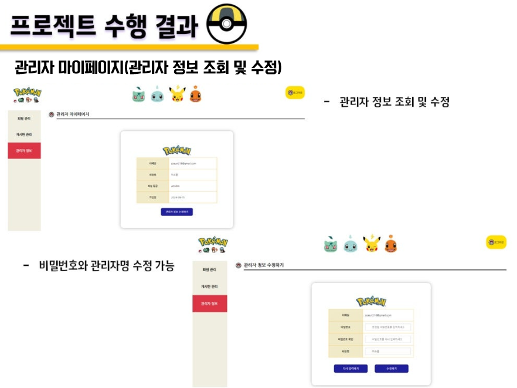

프로젝트명: 웹 사이트 클로닝 프로젝트
프로젝트명: 포켓몬 도감 프로젝트

▷ 프로젝트 소개: API를 활용하면서 재미까지 더할 수 있는 주제를 찾던 중 포켓몬 API를 발견하게 되었고, 포켓몬의 다양한 정보와 속성을 제공하기 위한 도감 사이트를 제작하였습니다. 포켓몬 도감 공식 API를 활용하여 도감 목록 및 포켓몬 상세 정보를 구현하였으며, MVC(Model-View-Controller) 패턴을 적용하여 체계적인 웹 애플리케이션 설계를 경험하였습니다. 첫 팀 웹 프로젝트로, 서블릿을 사용하여 클라이언트 요청을 처리하고 비즈니스 로직을 구현했으며 JSP를 통해 동적인 사용자 인터페이스를 생성했습니다.
▷ 개발 기간: 2024.06.24 ~ 2024.07.04 (총 11일)
▷ 기술 스택: Java 17, Oracle XE 18c, JavaScript(ES6), CSS3, Docker,
TomCat 10.1.24, Servlet 6.0.0, JSP 3.1.1, Mybatis. GitHub
▷ 참여인원: 총 7명
▷ 맡은 역할: 프로젝트 팀 조장, 프로젝트 총괄, 디자인 총괄, 발표 PPT 제작, 프로젝트 결과물 발표
▷ 구현 기능: 관리자 회원 관리(조회, 탈퇴), 관리자 정보 조회 및 수정, 메인 페이지 디자인, 관리자 페이지 디자인, 사이트 전체 레이아웃 구성
▷ 구현 페이지:



▷ 프로젝트를 통한 성과: 이전의 프로젝트와는 달리 처음으로 팀 프로젝트를 웹 기반으로 수행하면서 많은 시행착오를 겪었지만, 스터디와 조별 회의를 통해 의견을 공유하고 협력함으로써 프로젝트의 체계를 확립할 수 있었습니다. 이 과정에서 User Flow, 기능 명세서, 화면 정의서 등을 작성하며 문서화 및 기획 능력을 기를 수 있었습니다. 또한, 생소하던 MVC(Model-View-Controller) 패턴에 대한 이해를 얻을 수 있었으며, 이 패턴을 통해 애플리케이션의 구조를 체계적으로 설계하고 비즈니스 로직과 사용자 인터페이스를 효율적으로 분리할 수 있는 경험을 쌓았습니다.
▷ GitHub:
포켓몬 도감 프로젝트
▷ 결과 자료 PDF:
포켓몬 도감 프로젝트
프로젝트명: 농촌 체험 예약 플랫폼

▷ 프로젝트 소개: 현재 농촌 지역은 인구 감소와 고령화, 사회적 단절, 기반 시설 부족 등으로 많은 어려움을 겪고 있습니다. 이러한 문제를 해결하고 지역 활성화를 도모하기 위해 본 프로젝트를 기획하게 되었습니다. 주요 기능에 공공데이터 API와 카카오 맵 API를 활용하였고, MSA(MicroServices Architecture) 방식으로 개발이 이루어졌습니다. 백엔드 개발은 스프링부트, 프론트엔드 개발은 타임리프와 리액트로 진행하며 RESTful API를 통한 클라이언트와 서버 간의 데이터 통신을 경험하였습니다.
▷ 개발 기간: 2024.08.01 ~ 2024.08.30 (약 5주)
▷ 기술 스택: Java 17, Oracle XE 18c, Spring Boot 3.3.2, JavaScript(ES6),
HTML5, CSS3, REACT, SpringDataJPA, Docker, GitHub
▷ 참여인원: 총 6명
▷ 맡은 역할: 프로젝트 팀 조장, 프로젝트 총괄, 디자인 총괄, 프로젝트 결과물 발표, 깃허브 관리 및 Pull Request 승인, 프로젝트 계획서 및 보고서 작성, 공통 공유 사항 작성(Notion 위키)
▷ 구현 기능: 공공데이터 api활용한 전국 여행지 정보 조회, 시도/시군구별 여행지 조회, 찜하기 기능 구현, 마이페이지 찜한 목록 조회, 메인 페이지 디자인, 게시글 목록 및 게시글 작성ㆍ수정ㆍ확인 페이지 디자인
▷ 구현 페이지:


▷ 프로젝트를 통한 성과: 5주에 걸친 긴 프로젝트였으나 팀 조장으로서 프로젝트를 총괄하고 팀원들의 협업을 이끌어내면서 리더십과 일정 관리 능력을 키울 수 있었습니다. 또한, 프로젝트 계획서 및 보고서 작성을 통해 문서화 작업과 기획 능력을 향상시키는 계기가 되었으며, GitHub 관리와 Notion 위키를 활용한 공통 공유 사항 작성 경험을 통해 버전 관리 및 팀 협업 도구 사용에 대한 숙련도를 높일 수 있었습니다. MSA 방식의 개발 구조를 이해하는 데 도움이 되었고, React를 활용해 프론트 화면을 설계하면서 프레임워크에 대한 이해도 또한 높일 수 있었습니다.
▷ GitHub:
농촌 체험 예약 프로젝트
▷ 결과 자료 PDF:
농촌체험 예약 플랫폼 조이팜
프로젝트명: 학술논문연구관리 플랫폼
 학력 및 경력
학력 및 경력 교육 이력
교육 이력 보유 자격증
보유 자격증